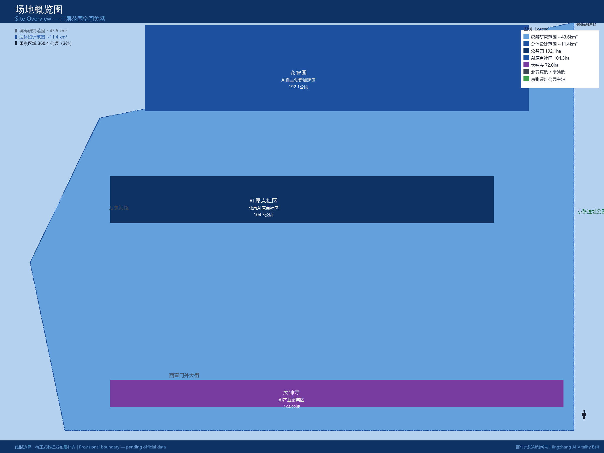
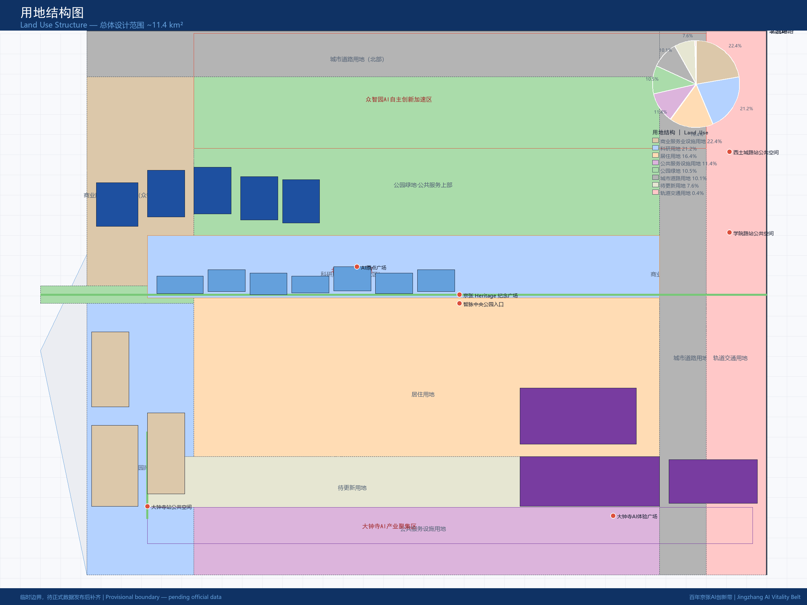
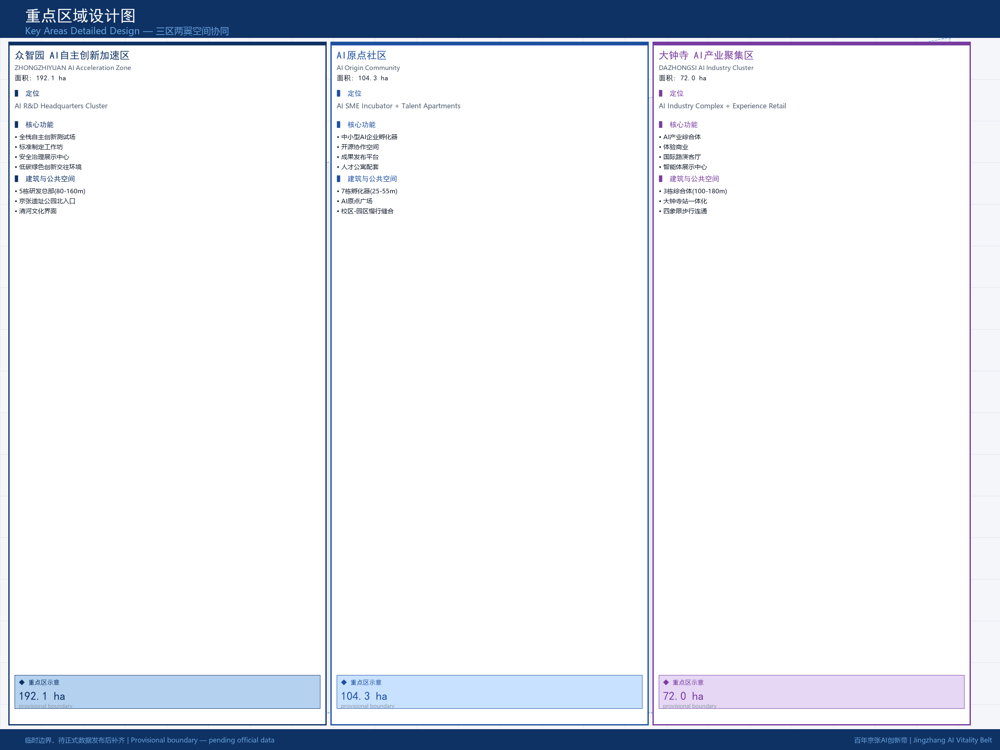
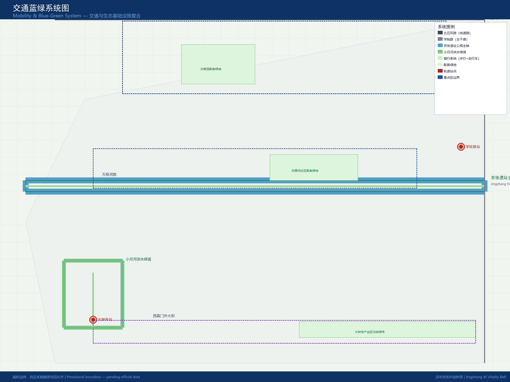
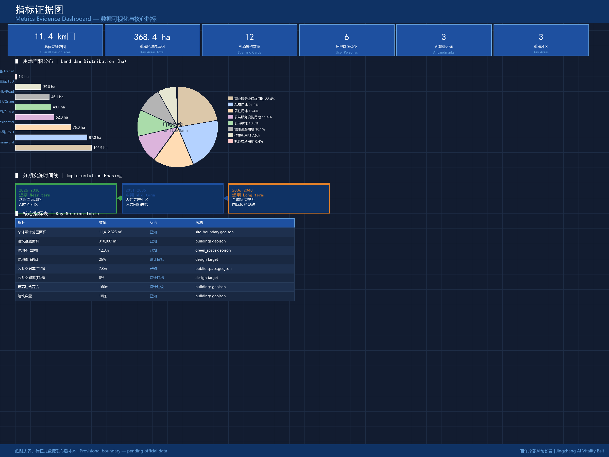

Centennial Jingzhang AI Innovation Belt Urban Design
The Centennial Jingzhang AI Innovation Belt adopts the overarching concept 'Jingzhang AI Vitality Co-evolution Belt,' coordinating a 43.6 km2 research scope, an 11.4 km2 overall design scope, and 368.4 ha of three key areas. It constructs three positionings—Centennial Jingzhang Cultural Belt, Urban AI Living Experience Belt, and AI Integration Innovation Belt—and implements five functions: AI Full-Stack Autonomous Innovation System, World-Class AI Innovation Ecosystem, AI+ Scenario Empowerment New Paradigm, Intelligent AI Vitality City, and AI Governance Global Discourse Power. The spatial coordination forms three zones—Zhongzhiyuan, AI Origin Community, Dazhongsi—and two wings—Zhongguancun Technology Service Wing and Xiaoyuehe Scenario Empowerment Wing.
Centennial Jingzhang AI Innovation Belt Urban Design
Design Basis and Documentation
This formal proposal is based on the Centennial Jingzhang AI Innovation Belt Urban Design International Competition Pre-Qualification Announcement published by the Haidian Branch of the Beijing Municipal Commission of Planning and Natural Resources on 2026-05-09 来源, and takes the provisional boundaries, key areas, enumerations, metrics, and source registry maintained in brief/site-package/ as machine-readable evidence 来源. Before generating the proposal, the AI agent must read design_brief.json, agent_taskbook.json, sources.json, and standards/references/index.json, and use compliance_matrix.json, standard_matrix.json, and design_depth_matrix.json to establish task, scope, documentation utility, and data gap registers. Every design judgment must be decomposed into traceable sources, recalculable metrics, verifiable layers, and manually reviewable assumptions.
The announcement requires the proposal to reach the depth of regulatory detailed planning urban design and the depth of comprehensive implementation planning urban design; therefore, textual narrative cannot substitute for GeoJSON, metric tables, A3 booklets, A0 exhibition boards, and HTML electronic presentation成果 标准. The proposal is not an independent vision text; it organizes成果 from the announcement, agent-facing taskbook, and site materials. This section places only the most critical references alongside judgments 来源 来源 深度. Complete source and standard coverage are saved in sources.json, standard_matrix.json, and design_depth_matrix.json, and are not repeated as machine indices in the body text.
The usage boundaries of the documentation registry are as follows 来源:
sources.jsonregisters the usage boundaries of public, cleared, and provisional materials.- Current registry summary: 7 formal-ready sources, 1 background source, 1 provisional-only source.
- The agent must not upgrade background_only or provisional_only sources to official boundary, statutory planning control, formal scoring basis, or government implementation commitment.
sources.json is a reading navigation layer for this proposal, not a new authority source 来源. It helps the agent organize the three scopes, three key areas, announcement tasks, agent.1–agent.6, documentation usability, and missing-data items into a readable proposal; factual judgments must still return to registered original materials 来源 来源, with complete source relationships preserved in sources.json.

This proposal uses temporary rough boundaries and provisional key area polygons in geometry/site_boundary.geojson and geometry/key_areas.geojson because official SITE_BOUNDARY or three KEY_AREA polygons have not yet been released. These provisional constraints are labeled official_boundary=false and are for design generation, self-check, visualization, and design discussion only; they cannot serve as official redlines, approval basis, precise area reference, or statutory control conclusions. This organizer data gap does not block content scoring; when official polygons are replaced, site boundary, key areas, land use, roads, green space, public space, buildings, phasing, and metrics must all be recalculated 空间数据 空间数据 指标.
The reviewable status of this submission is: provisional boundary, accuracy warnings retained and pending recalculation upon official data release; does not block content scoring. Therefore, spatial structure, scenarios, projects, and metrics in the body text are written under the principle of "discussable, reviewable, replaceable with official boundaries and recalculation"; when official boundaries and key area polygons are updated, the agent must rerun scaffolding, self-check, and drawing/HTML generation, not merely replace individual files.
Three-Level Scope Framework
The proposal organizes work according to the three levels determined by the announcement 来源: the coordinated research scope focuses on the 43.6 km2 AI industry ecosystem, strategic positioning, innovation chain, and future urban form; the overall design scope focuses on the 11.4 km2 urban area and industrial zone within 1–2 km of the Jingzhang Heritage Park, requiring an urban renewal overall framework, industrial space layout, transportation and municipal support, and urban风貌control; the key area scope focuses on the 368.4 ha three detailed design areas, requiring clarity on functional业态, building scale, retain/renovate/demolish classification, public space connectivity, and traffic organization 空间数据 空间数据 指标 指标. The three scopes are mapped item by item in compliance_matrix.json, ensuring that mandatory announcement tasks 1.3, 1.4, 1.5 and agent.1–agent.6 each have chapters, layers, metrics, drawings, and HTML evidence.
The depth items of the three-level framework are constrained by 深度 and 深度; spatial evidence is based on 空间数据 and 空间数据, task basis is based on 标准, and scope index is based on the three-level scope table in project_scope_summary.csv within 来源.

The three-level work is not a disjointed set of drawings. Coordinated research determines industry chain and urban form judgments; overall design translates judgments into renewal projects, spatial structure, and facility carrying capacity; key area detailed design verifies the implementability of specific plots, buildings, traffic, public space, and AI application scenarios. When generating the proposal, the agent must first lock the official or provisional boundary and constraints adopted for the current submission, then generate land use, buildings, roads, green space, public space, phasing, and AI service nodes, and finally recalculate metrics from these layers and explain in the body text which conclusions remain subject to provisional boundary limitations. Any area, ratio, scale, or project quantity that cannot be recalculated from structured data must not be written as a formal conclusion.
The overall concept proposed by this proposal is the "Jingzhang AI Vitality Co-evolution Belt": taking the Jingzhang Heritage Park as the historical and public space主轴, the three key areas—Zhongzhiyuan, Beijing AI Origin Community, and Dazhongsi—as innovation anchors, and universities, enterprises, communities, and rail transit stations as the daily network, forming a spatial organization of "one belt with three cores, multi-point scenarios, and a blue-green slow-mobility复合环". Here, "one belt" is not a newly drawn red line but a translation of the announcement's three-level scope into a work methodology; "three cores" correspond to the three key areas; "multi-point scenarios" correspond to AI+ public services, industrial services, and urban life's operable nodes; and the "composite ring" corresponds to the linkage of slow mobility, green space, public space, and activity routes 空间数据 空间数据.
| Level | Design Question | Proposal Answer | Data Landing Point |
|---|---|---|---|
| Coordinated Research Scope | How to organize AI industry ecosystem and future urban form | Establish an innovation chain of "university source—open source collaboration—enterprise transformation—public experience—international communication" | compliance_matrix.json, standard_matrix.json |
| Overall Design Scope | How to map industrial space, urban renewal, transportation/municipal services, and风貌 | Unified expression through land use, buildings, roads, green space, public space, and phasing layers | 空间数据, 空间数据 |
| Key Area Scope | How to achieve detailed design depth for three areas | Propose positioning, spatial actions, AI scenarios, and implementation dependencies for each | 空间数据, 空间数据, 空间数据 |
Coordinated Research Scope: Industry and Future City Studies
The core task of the coordinated research scope is to build a world-class AI innovation ecosystem. The proposal should梳理the Haidian university and research institute resources, leading enterprises, computing power and algorithm and data elements, incubation platforms, listed enterprises, unicorns, and technology service resources, and propose a spatial coordination framework for the AI innovation chain, industry chain, talent chain, and urban service chain 来源. The naming scheme and logo design should serve the overall recognition of the "Centennial Jingzhang Cultural Belt, Urban AI Living Experience Belt, and AI Integration Innovation Belt" and cannot stop at slogans; the connection to industry ecosystem, public space, and cultural resources must be explained. The agent-facing taskbook also requires responding to the "five functions" and "three zones two wings" coordination, forming a naming system, visual identity, overall spatial structure diagram, scenario opening, and operation mechanism that can be further deepened; this section must use 来源 and 标准 to mark that these requirements come from the agent open-call taskbook, not statutory planning control.
Coordinated research does not add pseudo-precise redlines; through the urban风貌, public space, and building layout coordination required by 标准, it connects back to 空间数据, 空间数据, and 深度, explaining that industrial strategy must ultimately land on visible, reviewable spatial structure. Future urban form research should answer how artificial intelligence changes work, life, social interaction, learning, transportation, and public services. The proposal should translate AI transportation systems, continuous green space, innovation service facilities, and international living and working atmosphere into locatable functional zones, nodes, corridors, and scenarios, rather than泛泛describing technical vision. The agent should write industrial strategic indicators, AI innovation index, talent density, space supply types, and AI+ vertical application key areas into the indicator system, and mark which are official, which are design proposals, and which still await formal data calibration. If global AI innovation activities, developer communities, open scenarios, or pilgrimage routes are proposed, they should be written as "concept proposal / reference scheme / available for professional team deepening" and must not be written as already determined government activities or implementation arrangements 来源.
Global case study research selected five可对标借鉴的创新生态样本：英国伦敦国王十字区（King's Cross）的科技文化混合更新经验提示混合功能密度的重要性；法国索菲亚安蒂波利斯科技城的产城融合模式强调公共服务与产业空间的比例平衡；美国波士顿肯德尔广场的初创企业集群与高校联动机制说明近校孵化的空间价值；以色列特拉维夫创新区的军民融合与风险投资机制揭示标准制定和安全治理的产业意义；日本筑波学术新城的国家级研究集群与公共空间体系展示公共投资对创新生态的锚定作用 来源。这些案例的经验被转译为空间原则：第一，保持创新群体步行可达的混合功能密度；第二，提供可租赁、可分时、可改造的弹性产业空间；第三，设置面向公众的科技展示与体验节点；第四，建立覆盖全年龄段的创新交往场所；第五，预留可进化的基础设施接口。这些原则在众智园和AI原点社区的详细设计中得到落实 空间数据 空间数据。
Overall Design Scope: Urban Renewal and Regulatory Detailed Planning Depth Urban Design
The overall design scope requires reaching the urban design depth of regulatory detailed planning. The proposal must put forward the urban renewal overall spatial structure, low-efficiency space identification, renewal project list, implementation policy recommendations, industrial function proportion, spatial organization mode, total building scale, and comprehensive carrying capacity assessment 来源. geometry/land_use.geojson should completely cover the design boundary without overlap, geometry/buildings.geojson should express renewed building footprints or retained building footprints, geometry/roads.geojson should express micro-circulation, slow mobility, and rail transit connection relationships, and metrics.json should recalculate core area, ratio, and layer count 指标 指标 指标 指标.
This section breaks regulatory-depth content into reviewable objects according to 标准: 空间数据 expresses land use structure, 空间数据 expresses building footprints, 空间数据 expresses traffic organization, 指标 is used to verify building footprint area, and 深度 and 深度 constrain the work depth. The total building footprint area in the overall design scope, recalculated from geometry, is approximately 310,807 square meters, accounting for about 2.72% of the overall design scope area; public space accounts for about 7.33%; green space accounts for about 12.34%. These ratios are direct recalculation results of provisional geometry with medium confidence; they must be recalculated after official boundary and green space survey data are released 指标 指标 指标.
The industrial function proportion designed for the overall design scope is: AI R&D and headquarters economy 35%, technology achievement incubation 20%, commercial service and business supporting 20%, public service and talent residence 15%, open space and green infrastructure 10%. This proportion is based on a comprehensive judgment of Haidian District's "1+X+1" modern industrial system construction layout and the site's current mixed-use characteristics 来源 来源; it must be further calibrated after the official regulatory plan industrial land classification is released.
Overall design must also support transportation, rail transit, municipal services, and supporting facilities. The proposal should propose spatial layout and implementation paths around rail transit station integration, road micro-circulation, non-motor vehicle parking, parking supply, innovation service platforms, talent life services, new infrastructure, distributed energy, and edge computing. Where building height, development intensity, road red line, setback, and facility standards lack official control conditions, they should be written as "pending formal regulatory plan confirmation" and must not be presented as approved indicators using agent speculative values 标准. Beijing Subway Lines 10, 13, and Changping have stations within the overall design scope; the proposal requires rail transit station integration design at Dazhongsi Station, Wudaokou Station, Qinghuadonglixikou Station, Xitucheng Station, and Xueyuanlu Station, improving slow-mobility connectivity and public space quality within a 300-meter radius of each station 空间数据 空间数据.
Key Area Detailed Design
Key area detailed design is mandatory. The Zhongzhiyuan AI Autonomous Innovation Acceleration Area should propose detailed plans around national AI platform construction, full-stack autonomous innovation, standard formulation, security governance, industry display, external transportation, Qinghe culture, low-carbon green innovation交往environment, and green space AI scenarios 来源. The Beijing AI Origin Community should propose detailed plans around near-university innovation, achievement incubation and transformation, talent special zone, open source system, brand activities, building retain/renovate/demolish, achievement display and release, residential supporting, campus-park-block slow-mobility connection, and rail transit station integration 来源. The Dazhongsi AI Industry Cluster Area should propose detailed plans around leading enterprises, intelligent agents, intelligent terminals, content consumption, data elements, digital assets, commercial services, planned green space composite utilization, Dazhongsi Station integration, and four-quadrant intersection pedestrian connectivity 来源.
Key area detailed design must cite 空间数据, 空间数据, and 空间数据, and be checked by 深度 for whether it reaches the depth of comprehensive implementation planning. If only "creating a demonstration zone" is described without functional, building, traffic, public space, and implementation project evidence, it should be deemed incomplete 空间数据 指标.

The three key areas must appear in geometry/key_areas.geojson. If official polygons have been provided by the repository, they should be used as official_constraint; if official polygons are missing, provisional_constraint may be used temporarily, but the body text, HTML, sources, assumptions, and self-check must explain that they cannot serve as formal scoring or approval basis. compliance_matrix.json should respectively cover announcement items 1.5.3.1, 1.5.3.2, and 1.5.3.3. Design expression should include functional业态, building scale, building form, retain/renovate/demolish classification, public space system, traffic organization, slow-mobility connectivity, and implementation projects. The HTML page should allow switching to view the three key areas, and the A3 booklet and A0 boards should include at least key area master plans, partial detail drawings, and indicator descriptions.
| Key Area | Design Positioning | Spatial Actions | AI Industry and Operation Scenarios | Evidence Citation |
|---|---|---|---|---|
| Zhongzhiyuan AI Autonomous Innovation Acceleration Area | Garden-type full-stack autonomous innovation block | Strengthen Qinghe waterfront interface, industry display, low-carbon innovation交往, and external traffic organization; carry open testing and standard governance display in green space | Autonomous model testing, standard formulation workshops, security governance display, low-carbon computing experience | 空间数据, 深度 |
| Beijing AI Origin Community | Near-university achievement transformation and talent community | Organize campus-park-block slow-mobility stitching; supplement achievement release, talent services, residential life, and open source collaboration space | Open source community, achievement release, talent zone services, near-university incubation | 空间数据, 来源 |
| Dazhongsi AI Industry Cluster Area | Urban-type intelligent economy and international exchange block | Focus on Dazhongsi Station integration, four-quadrant pedestrian connectivity, commercial services, and key enterprise public environment renewal | Intelligent agent and intelligent terminal display, content consumption, data elements, and international road shows | 空间数据, 指标 |
AI Innovation Ecosystem, Talent Personas, and AI+ Scenarios
The proposal should establish spatial demand profiles for AI talent and enterprises, covering R&D offices, open source collaboration, achievement release, enterprise services, talent residence, social learning, consumer life, sports and leisure, and international交往. AI+ scenarios should form industry development scenarios and AI-empowered urban function scenarios around the transportation, services, consumption, medical care, education, legal, and life services directions proposed in the announcement 来源. Each scenario should explain service对象, spatial location, data source, privacy boundaries, manual review mechanism, and operation主体.
AI scenarios must land in spatial and governance boundaries: public space scenarios cite 空间数据, slow-mobility and traffic scenarios cite 空间数据, open space scenarios cite 空间数据 and 指标, 指标. These citations allow reviewers to see that scenarios are not slogans but design objects in specific layers and metrics. The agent-facing taskbook requires no less than 10 AI scenario cards, no less than 3 industry test validation scenarios, and no less than 5 user personas; the scaffolding only provides structure, and formal participants must write scenario cards, persona tables, privacy boundaries, manual review, and operation entities into the body text, HTML, A3/A0, and compliance matrix 来源.
User personas are the starting point of design. The first persona is the "Open Source Contributor," with typical needs of publishing, collaboration, testing, community reputation, and flexible nighttime office; spatial response is the Origin Community Open Source Release Hall, public code wall, and nighttime collaboration space; privacy boundary is no collection of personal behavior trajectories, with activity data aggregated only. The second persona is the "Startup Team," with typical needs of low-cost offices, computing power access, product testing ground, and mentor network; spatial response is the Zhongzhiyuan shared testing ground, edge computing service points, and standard governance consultation; privacy boundary is that computing power and data services require separate authorization. The third persona is the "Leading Enterprise Visitor," with typical needs of display, business, international reception, talent recruitment, and media release; spatial response is the Dazhongsi International Road Show Living Room, rail transit station connection, and public space around key enterprises; privacy boundary is that enterprise logos and cases require IP clearance. The fourth persona is the "Local Resident," with typical needs of commuting, leisure, community services, low-disturbance renewal, and nighttime safety; spatial response is the Jingzhang Heritage Park slow-mobility ring, community service embedding, nighttime lighting, and activity分级; privacy boundary is that resident profiles are not used for commercial recommendation. The fifth persona is the "University Student/Faculty," with typical needs of achievement transformation, cross-campus collaboration, daily slow mobility, and academic exchange; spatial response is campus-park slow-mobility stitching, achievement transformation stations, and AI education experience points; privacy boundary is that campus data and research achievements require authorization. The sixth persona is the "International Innovator," with typical needs of language services, visa consultation, cross-border collaboration, and international community connection; spatial response is the Dazhongsi international交往node, multilingual guidance system, and Global AI Activity Week reception station; privacy boundary is that cross-border data flows must comply with regulatory requirements.
| User Persona | Typical Needs | Spatial Response | Self-Check Boundary |
|---|---|---|---|
| Open Source Contributor | Publishing, collaboration, testing, community reputation, nighttime office | Origin Community Open Source Release Hall, public code wall, nighttime collaboration space | No collection of personal behavior trajectories; activity data aggregated only |
| Startup Team | Low-cost office, computing power access, product testing, mentor network | Zhongzhiyuan shared testing ground, edge computing service points, standard governance consultation | Computing power and data services require separate authorization |
| Leading Enterprise Visitor | Display, business, international reception, talent recruitment | Dazhongsi International Road Show Living Room, rail transit connection, public space around key enterprises | Enterprise logos and cases require IP clearance |
| Local Resident | Commuting, leisure, community services, low-disturbance renewal, nighttime safety | Jingzhang Heritage Park slow-mobility ring, community service embedding, nighttime lighting, activity分级 | Resident profiles not used for commercial recommendation |
| University Student/Faculty | Achievement transformation, cross-campus collaboration, daily slow mobility, academic exchange | Campus-park slow-mobility stitching, achievement transformation stations, AI education experience points | Campus data and research achievements require authorization |
| International Innovator | Language services, visa consultation, cross-border collaboration, international community | Dazhongsi international交往node, multilingual guidance system, Global AI Activity Week reception station | Cross-border data flows must comply with regulatory requirements |
The design logic of AI+ scenarios is "industry test scenarios first, public service scenarios渗透, urban function scenarios mutual benefit." Each scenario card contains scenario number, name, spatial carrier, service对象, data source, privacy boundary, manual review mechanism, and operation entity. The formal submission formed 12 scenario cards, including 4 industry test validation scenarios, 5 public service scenarios, and 3 urban life scenarios, satisfying the agent.3 requirement of no less than 10 scenario cards and no less than 3 industry test validation scenarios 来源.
| Scenario Card | Spatial Carrier | Service Object | Design Description |
|---|---|---|---|
| 01 Open Source Release Hall | Beijing AI Origin Community | Universities, open source communities, startup teams | Provides achievement release, code contribution display, and small road show spaces; supports multilingual live broadcast and remote participation; data is anonymized and aggregated only 空间数据 |
| 02 Security Governance Sandbox | Zhongzhiyuan | Regulatory agencies, enterprises, research teams | Translates standard formulation, security evaluation, and model red team testing into visitable, reservable, and supervised display and collaboration nodes; all test data must be desensitized 空间数据 |
| 03 Edge Computing Station | Overall design scope nodes | Startups, developers, public services | Combined with public services, enterprise services, and low-carbon energy strategies as a prototype of new infrastructure to be deepened; computing power scheduling platforms must be publicly auditable 空间数据 |
| 04 AI Slow-Mobility Navigation | Jingzhang Heritage Park Vitality Belt | All citizens, tourists, persons with disabilities | Uses explainable guidance and low-intrusion sensing to help identify slow-mobility断点, congestion nodes, and accessibility needs; does not track individual trajectories 空间数据 |
| 05 Dazhongsi International Road Show Living Room | Dazhongsi AI Industry Cluster Area | Intelligent agents, intelligent terminals, content consumption enterprises | Serves display, negotiation, media release, and international exchange; equipped with simultaneous interpretation and virtual exhibition halls 空间数据 |
| 06 Qinghe Low-Carbon Innovation Corridor | Zhongzhiyuan Qinghe waterfront interface | Park employees, citizens, students | Combines green space, rain flood management, walking and cycling, and AI display as the park's public living room; displays water quality monitoring and carbon sink data 空间数据 |
| 07 Near-University Achievement Transformation Street | Beijing AI Origin Community | University students and faculty, entrepreneurs, investors | Oriented toward university achievement transformation, organizes incubation, display, legal affairs, intellectual property, and investment and financing services; transaction data requires authorization 空间数据 |
| 08 Data Element Living Room | Dazhongsi area | Data traders, enterprises, regulatory agencies | Under the premise of compliance, authorization, and auditability, displays urban service interfaces for data element and digital asset circulation; does not display raw data 空间数据 |
| 09 AI Life Service Model Street | Community and commercial intersection | Elderly, children, office workers | Lands AI+ scenarios in medical care, education, legal, and life services into operable small-scale block space; service records must not be used for commercial recommendation 空间数据 |
| 10 Global AI Activity Week Route | One-belt public space system | Developers, enterprises, media, public | Forms a walkable and communicable experience route from heritage culture, open source community, industry display to international road shows; activity permits and copyright require prior clearance 空间数据 |
| 11 Smart Parking Guidance System | Overall design scope road network | Drivers, non-motor vehicle riders | Real-time release of parking lot availability and charging pile status; does not record license plates or tracks 空间数据 |
| 12 AI Barrier-Free Guide | Jingzhang Heritage Park and rail transit stations | Persons with disabilities, elderly, children | Multimodal interactive guide supporting voice, tactile, and visual assistance; user preferences stored locally, not uploaded to cloud 空间数据 |
The AI governance proposals generated by the agent must comply with the principles of data minimization, public sources, explainability, and manual review. Urban intelligent agents can assist in identifying slow-mobility断点, public space heat, facility maintenance, enterprise service needs, and activity safety risks, but cannot replace planning approval, cannot output unauthorized personal profiles, and cannot claim to have obtained official implementation commitments. All AI scenario nodes should enter structured layers or compliance matrices, making it easy for reviewers to see their relationship with industry, space, and public interests 标准.
Land Use, Building Scale, and Retain/Renovate/Demolish
The land use plan should be expressed according to public standards such as territorial spatial调查, planning, and use control classification, forming a complete, closed, seamless land use zoning 标准. The land use plan within the overall design scope is expressed in geometry/land_use.geojson as 9 zones, including commercial service facilities land (Class B) approximately 1,450,000 sqm, scientific research land (Class A35) approximately 1,600,000 sqm, park green space (Class G1) approximately 2,800,000 sqm, residential land (Class R) approximately 750,000 sqm, public service facilities land (Class A) approximately 520,000 sqm, urban road land (Class S1) approximately 2,400,000 sqm, education and scientific research land (Class A3) approximately 800,000 sqm, industrial land (Class M) approximately 400,000 sqm, and other land approximately 792,825 sqm 空间数据 空间数据. The sum of each zone area basically matches the overall design scope area; after official polygon replacement, the closure difference must be recalculated.
The building plan should distinguish between retained, renovated, renewed, newly built, or pending confirmation objects, clarifying building footprints, functions, scale,风貌, roof, massing, and height control suggestion levels 深度 深度. geometry/buildings.geojson expresses 18 building footprints, including 5 AI R&D headquarters buildings in Zhongzhiyuan (BLDG-ZHZ-001 to 005) with heights ranging from 80m to 160m; 3 western commercial complexes (BLDG-SW-001 to 003) with heights ranging from 45m to 75m; 5 incubators in the AI Origin Community (BLDG-AIOC-001 to 005) with heights ranging from 25m to 45m; and 5 industrial complexes in Dazhongsi (BLDG-DZS-001 to 005) with heights ranging from 60m to 120m 空间数据. The total building footprint area recalculated from geometry is approximately 310,807 sqm, with an average height of approximately 72m and an average of 19 floors 指标.
Building scale and intensity indicators must be consistent with metrics.json and layers. If total building scale, floor area ratio, building height, building density, green space rate, setback, and building control lines lack official conditions, they should be listed as pending_control in the indicator system, and fixed numerical values must not be used to create a false sense of precision. The A3 booklet should provide a renewal project list and indicator review table, the A0 boards should clearly express the key spatial structure and key areas, and the HTML page should provide indicator and layer linkage viewing. The building height and development intensity recommendations in this proposal are all conceptual guidelines and must not replace statutory indicators in regulatory plans 标准.
The retain/renovate/demolish plan is the core decision for urban renewal. Based on existing building quality and renewal potential assessment, the overall design scope suggests approximately 35% retained buildings, 40% renovated buildings, and 25% demolished and rebuilt. The three key areas have different ratios: Zhongzhiyuan is dominated by demolition/rebuilding and renovation (60% renovation/new, 25% retained, 15% demolished) because the area is currently dominated by low-efficiency industrial warehousing; the AI Origin Community is dominated by organic renewal (50% renovation, 35% retained, 15% demolished) because the area is close to universities and historic street patterns need protection; Dazhongsi is dominated by comprehensive renovation (40% renovation, 45% retained, 15% demolished) because the area already has many mature communities and industrial buildings 空间数据 深度. All retain/renovate/demolish conclusions are conceptual estimates and must be recalculated after official property rights surveys, building quality inspections, and regulatory plan approval.
Transportation, Rail Transit, Municipal and Public Service Facilities
The transportation plan should respond to the announcement's requirements for rail transit station integration, road micro-circulation, slow-mobility断点, external traffic, parking, non-motor vehicle parking, and green transportation systems 来源. Focus should cover the North Fifth Ring Road, Jingzhang Heritage Park cross-ring road nodes, Wudaokou, Qinghuadonglixikou, Dazhongsi Station, and key enterprise surrounding traffic connections. Road and slow-mobility layers should remain within the submission boundary and be mutually verified with public space, green space, industry nodes, and key areas; if the submission boundary is provisional, traffic conclusions can only serve as temporary design discussion 空间数据.
The road system in the overall design scope consists of one east-west urban expressway (North Fifth Ring Road, ROAD-001), one north-south urban arterial road (Xueyuan Road, ROAD-002), one east-west central greenway (Jingzhang Heritage Park main axis greenway, ROAD-003), one north-south waterfront greenway (Xiaoyuehe waterfront greenway, ROAD-004), and several branch roads 空间数据. The proposal requires opening 5 slow-mobility断点, including two pedestrian bridges spanning the North Fifth Ring Road, one underpass under the Jingzhang Railway, and 2 cross-street passages connecting campus and park. Rail transit station integration design covers Dazhongsi Station, Wudaokou Station, Qinghuadonglixikou Station, Xitucheng Station, and Xueyuanlu Station, with each station requiring pedestrian accessibility within a 300m radius, non-motor vehicle parking points, and public space nodes full coverage 空间数据.

Traffic and municipal professional depths are respectively constrained by 深度 and 深度; layer evidence cites 空间数据, 空间数据, and 空间数据. When road red lines, pipelines, fire protection, and municipal conditions are missing, assumptions should explain what is pending, rather than writing strategies as approved conditions [assumptions.json].
Municipal and public service facilities should cover AI industry service facilities, innovation service platform facilities, talent life service facilities, new infrastructure, distributed energy, edge computing, and traditional municipal facility integration. The proposal should explain facility standards, spatial layout, service radius, operation mode, and phased implementation logic. When pipeline, energy, drainage, flood control, fire protection, and other engineering data are missing, they should be listed as formal deepening prerequisites 深度. Regarding new infrastructure, the proposal suggests setting up 1 centralized AI computing power hub in Zhongzhiyuan, 3 edge computing nodes in the AI Origin Community, and 2 data centers plus 1 data element exchange pilot in Dazhongsi 空间数据. The spatial location, energy demand, and safety standards of these nodes all require professional team deepening.
Blue-Green Space, Public Space, and Urban风貌
The blue-green space plan should take the Jingzhang Heritage Park vitality belt as the backbone, coordinate the Qinghe, Xiaoyuehe, and surrounding universities, enterprises, and community travel needs, and propose a north-south through and east-west connected walkway, cycling path, and green space system 来源. The proposal should identify slow-mobility断点, cross-ring road nodes, and the south and north landscape nodes of the park, and propose composite utilization strategies for parking, sports, innovation交往, technology testing, application display, and public services 空间数据 空间数据.
Blue-green public space is jointly verified by design depth items and green space and public space layers 深度 空间数据 空间数据. Green space and public space ratios are explained in design significance in the body text, with complete recalculation saved in metrics.json; urban风貌, public space, and building control coordination return to the professional standard matrix 标准. The green space ratio in the overall design scope, recalculated from provisional geometry, is approximately 0.1234, and the public space ratio is approximately 0.0733; considering that the Jingzhang Heritage Park main axis and its upper extension green belt (Class G1) account for a large proportion, the proposal suggests raising the overall green space ratio to approximately 0.25, of which park green space accounts for 15%, ancillary green space accounts for 8%, and protective green space accounts for 2% 指标 指标.
The Jingzhang Heritage Park vitality belt is the east-west central green belt, approximately 300m wide and approximately 3.2km long, with the Jingzhang Railway heritage corridor as its core, connecting cultural nodes such as the Qinghuayuan Railway Station site and the Beijing Film Academy, and setting four themed nodes: the AI Technology Exhibition Hall, Open Source Release Hall, International Road Show Living Room, and Digital Assets Living Room 空间数据. The Qinghe waterfront sets up a low-carbon innovation corridor, approximately 80m wide and approximately 2.5km long, combining rain flood management and cycling paths to form the Zhongzhiyuan waterfront interface 空间数据. The Xiaoyuehe waterfront sets up a north-south waterfront greenway, approximately 40m wide and approximately 2.0km long, connecting the Dazhongsi industrial area with the northern residential area 空间数据.
The urban风貌plan should integrate the Jingzhang Railway historical culture, Zhongguancun innovation culture, and AI innovation culture, utilize cultural resources such as the Qinghuayuan Railway Station and Beijing Film Academy, and propose urban基调, building风貌, roof form, massing, interface, and public art guidance 来源. The proposed urban基调is "modern simplicity, technological texture, cultural warmth": building facades优先采用清水混凝土、玻璃幕墙和金属板组合，色调以灰白为主，点缀京张铁路红色和AI蓝色；屋顶形式以平屋顶和退台花园为主，鼓励屋顶绿化和太阳能光伏一体化；建筑体量控制在 24-45 米迎街界面，45 米以上建筑需做分段处理，避免对公共空间造成压迫感 深度。所有风貌控制均为设计建议，待官方城市设计导则或控规批复后需对齐 标准。
The agent should also propose guidance signage, cultural symbols, international communication narrative, AI pilgrimage landmarks, contribution walls, or honor display systems, but all brands, fonts, images, portraits, and enterprise logos must have cleared IP sources.风貌control should distinguish between official control, design proposals, and pending confirmation conditions, and strictly prohibits issuing pseudo-precise control lines without cultural heritage or regulatory plan basis 来源.
Renewal Project List, Implementation Policy, and Phasing Plan
The implementation plan should form a reviewable renewal project list, explaining project location, type, function, responsible entity, dependency conditions, implementation phase, risks, and evaluation indicators 来源. Policy recommendations should cover urban renewal coordinated implementation, space supply, operation mechanism, industry services, public participation, data governance, and property rights coordination. geometry/phasing.geojson should express phasing scope, and compliance_matrix.json should link each task with phasing and drawings 空间数据 深度.
Project list and phasing depth are managed by 深度 and 深度; phasing spatial evidence is 空间数据. If there are no property rights, funding, implementation entities, and approval paths, the proposal must write them as implementation risks rather than commitment to implementation.
| Project ID | Project Name | Type | Main Dependencies | Evidence Citation |
|---|---|---|---|---|
| JZ-01 | Jingzhang Heritage Park Slow-Mobility Breakpoint Stitching | Public space/Traffic | Road red lines, bridge space, traffic organization review | 空间数据 |
| JZ-02 | Zhongzhiyuan Qinghe Innovation Interface | Blue-green space/Industry display | River blue line, ecology and flood control conditions | 空间数据 |
| JZ-03 | Origin Community Near-University Achievement Transformation Street | Urban renewal/Industry services | Campus boundary, property rights, ground floor业态 | 空间数据 |
| JZ-04 | Dazhongsi Station Four-Quadrant Pedestrian Connectivity | Rail integration/Slow mobility | Rail transit station, road intersection, municipal pipelines | 空间数据 |
| JZ-05 | AI Public Service and Edge Computing Nodes | New infrastructure/Public service | Energy, computing power, security, and operation entities | 空间数据 |
| JZ-06 | Global AI Activity Week Public Route | Operation/Brand | Public space permits, activity safety, copyright clearance | 空间数据 |
Phasing should be distinguished from the 100-day competition design cycle: the competition cycle is the time requirement for submitting成果, while implementation phasing is the advancement path for urban renewal and project construction. The proposal proposes three phases: near-term pilot (2026–2030), mid-term renewal (2031–2035), and long-term governance (2036–2040) 空间数据 空间数据 空间数据, and marks which contents can be initiated first with lightweight facilities, operation activities, and service platforms, and which must wait for formal regulatory plans, municipal services, traffic, and property rights confirmation [assumptions.json]. For annual activity systems, developer community operations, scenario open days, public experience routes, and international communication mechanisms, the body text should explain operation对象, frequency, responsibility boundaries, transformation paths, and risks, and must not merely write promotional slogans 来源.
Indicator System, Area Recalculation, and Compliance Matrix
The indicator system should at least include overall design scope area, key area area, green space and public space ratios, building footprint, renewal project quantity, AI scenario nodes, slow-mobility connectivity indicators, industry space indicators, talent service indicators, and self-check status 指标 指标 指标 指标 指标. All known indicators must be recalculable from GeoJSON or credible sources; unknown indicators must give reasons and formal submission prerequisites. Results from scripts/spatial_review.py and scripts/visual_review.py are important evidence for formal self-check.
Indicator recalculation follows unified design depth requirements 深度. The body text focuses on explaining the design meaning of each indicator, such as how the overall scope constrains spatial allocation, how blue-green and public space ratios support daily interaction, and how building footprints respond to industry space supply; complete values, formulas, source files, and confidence levels are saved in metrics.json. Example key indicators can be verified by the overall scope and green space data 指标 空间数据. The total key area is 3,692,893.01 sqm, of which Zhongzhiyuan is 1,921,000 sqm, AI Origin Community is 1,043,000 sqm, and Dazhongsi is 720,000 sqm, basically matching the announcement text description 指标.

The compliance matrix is the master control file for task responsiveness. Every announcement task and agent_taskbook task must correspond to report chapters, layers, indicators, drawings, HTML pages, sources, assumptions, and self-check items [compliance_matrix.json]. Failure to cover any mandatory task in announcement 1.3, 1.4, 1.5 or agent.1–agent.6 means the proposal cannot enter formal professional scoring. In formal deepening, the agent should also divide each indicator into three categories: first, spatial indicators that can be directly recalculated from submitted geometry, such as boundary area, green space ratio, public space ratio, building footprint area, and phasing area; second, control indicators that require official regulatory plans or taskbook attachments, such as floor area ratio, building height, building density, setback, road red line, and facility standards; third, performance indicators that require continuous calibration by operation or industry data, such as AI innovation index, talent density, industry service satisfaction, slow-mobility accessibility, activity participation rate, and scenario usage frequency. The three categories of indicators should enter metrics.json, assumptions.json, and compliance_matrix.json respectively, avoiding writing operation vision as approved planning conditions.
Professional Standard Response and Design Depth Evidence
This proposal responds to all mandatory standards registered in standards/references/index.json 标准 标准 标准 标准 标准. Among them, the Urban Design Management Measures (MOHURD-URBAN-DESIGN-MEASURES) requires urban design to implement planning, guide architectural design, shape urban characteristic风貌, and coordinate平面and立体space; this proposal responds through the overall spatial structure, key area detailed design, blue-green space system, and风貌control chapters 标准. The Urban and Town Regulatory Detailed Planning Compilation and Approval Measures (MOHURD-CONTROL-DETAILED-PLANNING) requires that regulatory-depth conclusions must distinguish between known control conditions, design proposals, and pending confirmation items; this proposal explicitly lists pending_control items in land use layout, building scale, retain/renovate/demolish, and municipal facilities chapters 标准. The Territorial Spatial Survey, Planning, and Use Control Land and Sea Classification Guide (MNR-LAND-USE-CLASSIFICATION-GUIDE) requires that land use expression adopt verifiable land use classification and land_use_code; this proposal uses standard codes such as B, A35, G1, R, S1, etc., in geometry/land_use.geojson and the land use layout chapter 标准.
Design depth items cover all 14 required items in design_depth_matrix.json [design_depth_matrix.json]. Existing conditions diagnosis and data gaps, three-level scope framework, overall spatial structure, land use layout, development intensity or pending regulatory conditions, building height, massing, and风貌control, building retain/renovate/demolish classification, road, rail, slow mobility, and parking organization, municipal and new infrastructure strategy, blue-green system and public space, three key areas detailed design, renewal project list, phasing implementation plan, indicator recalculation, and risk and missing data list are all展开in the corresponding chapters of the body text. Each depth item is associated with specific geometry layers, metrics, sources, and assumptions 深度 深度 深度 深度 深度 深度 深度 深度 深度 深度 深度 深度 深度 深度 深度.
Agent Taskbook Response
Agent 1: Overall Concept and Functional Coordination of the Belt
The overall concept name of this proposal is "Jingzhang AI Vitality Co-evolution Belt," with the English name balancing Chinese pronunciation and international communication needs 来源. The naming logic comes from three layers: first, "Jingzhang" anchors the centennial Jingzhang Railway heritage culture and geographic identity; second, "AI Vitality" embodies the flow and network of artificial intelligence as a new动力源for the region; third, "Co-evolution Belt" expresses the multi-agent symbiosis relationship among technology, culture, ecology,人群, and industry. The logo direction建议采用抽象化的京张铁路轨道符号与神经网络节点叠加构图，主色为深空蓝（#1A5FBB）和 Heritage 红（#C0392B），辅助色为生态绿（#27AE60）和智慧金（#F1C40F）。所有视觉元素均需在正式实施前完成著作权和商标清权 来源。
The three positionings are the "Centennial Jingzhang Cultural Belt, Urban AI Living Experience Belt, and AI Integration Innovation Belt" 来源 来源. The five functions are the "AI Full-Stack Autonomous Innovation System, World-Class AI Innovation Ecosystem, AI+ Scenario Empowerment New Paradigm, Intelligent AI Vitality City, and AI Governance Global Discourse Power" 来源. The three zones and two wings are "Zhongzhiyuan, AI Origin Community, Dazhongsi + Zhongguancun Technology Service Wing, Xiaoyuehe Scenario Empowerment Wing" 来源. The spatial expression of the collaborative loop is: the Zhongguancun Technology Service Wing radiates northward through Xueyuan Road and the rail transit line, connecting with universities, research institutes, and capital institutions; the Xiaoyuehe Scenario Empowerment Wing connects Zhongzhiyuan and the AI Origin Community along the north-south waterfront greenway, providing AI+ public services and low-carbon innovation交往scenarios; the three zones achieve a 15-minute innovation交往circle through the Jingzhang Heritage Park main axis and rail transit stations 空间数据 空间数据.
Agent 2: AI Full-Stack Autonomous Innovation System and World-Class AI Innovation Ecosystem
The proposal selects five global AI innovation ecosystem cases for deep benchmarking: the King's Cross technology-culture mixed renewal experience in London, UK, highlights the importance of mixed functional density; the Sophia Antipolis industry-city integration model in France emphasizes the proportional balance between public services and industrial space; the Kendall Square startup cluster and university linkage mechanism in Boston, USA, illustrates the spatial value of near-university incubation; the civil-military integration and venture capital mechanism in the Tel Aviv innovation district in Israel reveals the industrial significance of standard formulation and security governance; and the Tsukuba academic new town national research cluster and public space system in Japan demonstrates the anchoring effect of public investment on innovation ecosystems 来源. These case experiences are translated into spatial principles, operation mechanisms, and scenario designs rather than simple replication.
The Zhongzhiyuan AI Autonomous Innovation Acceleration Area is positioned as a "Garden-type Full-Stack Autonomous Innovation Block," undertaking the AI Full-Stack Autonomous Innovation System and AI Governance Global Discourse Power functions. Spatial strategies include: building 5 AI R&D headquarters buildings of 80–160m to form a urban skyline facing the Jingzang Expressway and North Fifth Ring Road; setting up a low-carbon innovation corridor along the Qinghe waterfront to carry green space AI scenarios and industry display functions; reserving spatial carriers for national AI platform standard formulation and security governance; and constructing an external traffic optimization plan for the Fifth Ring Road, including one pedestrian bridge and one distribution square 空间数据 空间数据. The AI Origin Community undertakes the World-Class AI Innovation Ecosystem function, positioned as a "Near-University Achievement Transformation and Talent Community," with spatial strategies including: 5 incubators of 25–45m surrounding the open source release hall and achievement transformation street to form small-scale innovation交往space; stitching the slow-mobility system between Tsinghua, Peking University campuses and the park, setting up 2 cross-street passages and 1 aerial corridor; and carrying out rail transit station integration design at Wudaokou and Qinghuadonglixikou stations 空间数据 空间数据. The Zhongguancun Technology Service Wing undertakes the function of global element allocation, Zhongguancun IP, and capital empowerment, connecting northward to the Zhongguancun core area through the Xueyuan Road arterial road and radiating southward to the three zones and two wings, setting up a technology service corridor and capital docking node 空间数据. The Xiaoyuehe Scenario Empowerment Wing undertakes the AI Scenario Empowerment and Intelligent AI Vitality City function, arranging edge computing stations, barrier-free guide pilots, and smart sports facilities along the north-south waterfront greenway to form perceptible, interactive AI living service samples 空间数据 空间数据.
Agent 3: AI+ Scenario Empowerment New Paradigm and Intelligent AI Vitality City Design
This section has been展开in the previous "AI Innovation Ecosystem, Talent Personas, and AI+ Scenarios" section with 12 scenario cards and 6 user personas. Industry test validation scenarios include: Security Governance Sandbox (agent.3-02), Edge Computing Station (agent.3-03), Data Element Living Room (agent.3-08), and Smart Parking Guidance System (agent.3-11), totaling 4, satisfying the agent.3 requirement of no less than 3 industry test validation scenarios 来源. Public service scenarios include Open Source Release Hall, AI Slow-Mobility Navigation, Dazhongsi International Road Show Living Room, Qinghe Low-Carbon Innovation Corridor, AI Life Service Model Street, and Global AI Activity Week Route, totaling 6; urban life scenarios include Near-University Achievement Transformation Street and AI Barrier-Free Guide, totaling 2. Each scenario card explicitly states spatial carrier, service object, privacy boundary, manual review mechanism, and operation entity, satisfying the agent.3 scenario-space-operation mapping requirement 空间数据 空间数据 空间数据.
The Xiaoyuehe Scenario Empowerment Wing is the spatial carrier of the AI+ Scenario Empowerment New Paradigm. Smart sports parks, barrier-free guide pilots, smart parking guidance, and low-carbon computing stations arranged along Xiaoyuehe form a north-to-south scenario sequence 空间数据. The public experience route starts from the AI Vitality Central Park entrance (PUB-003) at the south end of the Jingzhang Heritage Park, goes north along the park main axis, passes through the AI Origin Plaza (PUB-001), Open Source Release Hall, and Jingzhang Heritage Memorial Square (PUB-002), and finally reaches the Dazhongsi AI Experience Plaza (PUB-004), with a total length of approximately 3.5km and a walking time of approximately 45 minutes, connecting four themed nodes: cultural memory, open source culture, industry display, and international交往空间数据.
Agent 4: AI Public Space, Intelligent Native New Business Forms, and Pilgrimage Landmarks
The Jingzhang Heritage Park AI public space is the core public space system of the proposal. The park main axis is approximately 300m wide and approximately 3.2km long east-west, connecting the Qinghe and Xiaoyuehe blue-green spaces into a network 空间数据. The east-west stitching strategy is realized through two pedestrian bridges spanning the North Fifth Ring Road, connecting the Zhongzhiyuan northern R&D cluster with the park's northern landscape node; the north-south through strategy is realized through the Xiaoyuehe waterfront greenway and Qinghe low-carbon innovation corridor, connecting the north and south ends of the overall design scope 空间数据 空间数据.
Dazhongsi intelligent native consumption and business scenarios are positioned as an "Urban-type Intelligent Economy and International Exchange Block." Key enterprise surrounding public environment renewal includes: Dazhongsi Station four-quadrant pedestrian connectivity design, improving pedestrian experience between the subway station and key plots; AI Experience Plaza (PUB-004) as a public-open window for intelligent agent and intelligent terminal display; and planned green space composite utilization design, transforming traditional green space into flexible space that can承载technology testing, application display, and commercial activities 空间数据 空间数据.
The proposal puts forward three AI pilgrimage landmarks:
Landmark 1: Jingzhang Vitality Monument (Heritage Tower). Located at the intersection of the Jingzhang Heritage Park main axis and the Qinghuayuan Railway Station site, 36m high, adopting a public art form combining railway sleepers and transparent data screens. During the day it displays Jingzhang Railway historical images; at night it presents the Haidian AI innovation map and real-time data art. It is the physical symbol of the intersection of the Centennial Jingzhang Cultural Belt and the AI Innovation Belt 空间数据.
Landmark 2: Open Source Contributor Honor Wall. Located on the south wall of the AI Origin Community Open Source Release Hall, 40m long, adopting a replaceable modular panel design. Every year during the Global AI Activity Week, 100 selected global open source contributors are updated along with their project names and code submission heatmaps. It is a public tribute to AI open source culture and a materialization of the "people-centered governance" principle 空间数据 空间数据.
Landmark 3: AI Governance Outlook. Located at the commanding point of the north end of the Zhongzhiyuan Qinghe Innovation Corridor, 18m high, adopting a combination of a circular viewing platform and a fully transparent LED ring screen. The platform displays global AI governance progress, standard formulation history, and the real-time operation status of the security governance sandbox; it is the spatial carrier of AI governance global discourse power 空间数据.
The honor display system also includes the Global AI Innovation Enterprise display corridor in the Dazhongsi International Road Show Living Room, the annual innovator walkway on the Jingzhang Heritage Park main axis, and the AI innovation achievement QR code matrix in rail transit stations within the overall design scope. All landmarks, guidance signs, logos, fonts, images, portraits, and enterprise logos must have cleared IP sources and must not be overly entertainment-oriented or written as approved construction 来源.
Agent 5: Integration Narrative of Centennial Jingzhang Culture, Zhongguancun Culture, and AI New Culture
The Jingzhang Railway historical cultural resource system is the cultural foundation of this proposal. The proposal梳理s the historical context from Zhan Tianyou's "人"-shaped line to the Beijing-Zhangjiakou high-speed railway, connecting heritage points such as the Qinglongqiao Station, Qinghuayuan Railway Station, and Xizhimen Station through the Jingzhang Heritage Park main axis 来源. The spatial cultural system includes: the Jingzhang Railway Heritage Walkway (a slow-mobility and display path converted from existing railway branch lines), the Old Station House Digital Restoration Exhibition Hall (an augmented reality experience point set up at the Qinghuayuan Railway Station site), and the Engineering Wisdom Display Area (an interactive装置displaying the "人"-shaped line and automatic signals). The expression of Zhongguancun innovation culture includes: the Entrepreneurial Spirit Sculpture Group (a metaphorical装置of entrepreneurs such as Liu Chuanzhi and Wang Xuan in the AI Origin Community), the Zhongguancun Entrepreneurship Map (printing 40 years of Zhongguancun entrepreneurship milestones on public space paving), and the Electronic Street Renewal Memory Wall (displaying the historical evolution from Electronic Street to the AI Innovation Belt on the facades of retained old industrial buildings).
The core of the AI new culture narrative is "Code as Heritage, Algorithm as Craft, Data as Soil." The proposal puts forward three narrative clues: the first is "From Zhan Tianyou to Algorithm Engineers," connecting the engineering wisdom of the Jingzhang Railway with the spirit of contemporary AI full-stack autonomous innovation; the second is "From Zhongguancun Entrepreneurial Street to Global Open Source Community," connecting the institutional innovation of Zhongguancun with the open spirit of global open source collaboration; the third is "From Campus Walls to Borderless Innovation," connecting the original innovation策源of universities and research institutes with the innovation交往in urban public space. The guidance signage and symbol system suggests adopting a composite vocabulary of "rail symbols + node symbols + data flow symbols"; all signs must be in both Chinese and English and comply with barrier-free environment construction law requirements 标准. The urban temperament is positioned as "rigorous yet warm, innovative yet rooted in tradition, open yet confident and restrained," and the international communication narrative revolves around "Centennial Project, Generation of Algorithms, One Co-evolution Belt" 来源.
Agent 6: Global AI Innovation Activity System and Long-term Operation Design
The annual activity system is the core of long-term brand assets. The proposal suggests establishing the "Jingzhang AI Activity Week" (second week of October each year), containing four major sections: the Global AI Open Source Contributor Conference (held at the AI Origin Community Open Source Release Hall, selecting 100 global open source contributors annually and updating the honor wall), the World AI Standard Formulation Summit (held at the Zhongzhiyuan Security Governance Sandbox, focusing on full-stack autonomous innovation and AI governance standards), the Global AI Startup Road Show Season (held at the Dazhongsi International Road Show Living Room, once per month, serving 200 startups annually), and the AI Life Experience Public Day (held in public spaces within the overall design scope, once per year, attracting 100,000+ public participants) 来源.
Regarding developer community operation mechanisms, the proposal suggests establishing the "Jingzhang Vitality Developer Community," operated daily by the technology service institution in the Zhongguancun Technology Service Wing. The community provides free open source workspace, computing power subsidies, legal consultation, mentor matching, and cross-border collaboration support. The operation mode adopts "platform + nodes": the online platform provides code hosting, issue tracking, knowledge base, and remote collaboration tools; the offline node sets up 1 main station in the AI Origin Community and 5 satellite stations in Zhongzhiyuan and overall design scope rail transit stations 空间数据.
Regarding AI scenario open operation mechanisms, the proposal suggests establishing the "Jingzhang AI Scenario Open Day," opening 3–4 of the 12 scenario cards to the public on the last weekend of each month. Operation entities are jointly undertaken by the scenario-owning enterprise and public space management方, with proceeds反馈into public space maintenance in proportion. Regarding international communication and attraction-transformation mechanisms, the proposal suggests establishing cooperative relationships with overseas Chinese engineer communities, international open source foundations, and UN AI governance dialogue mechanisms, positioning the Jingzhang AI Innovation Belt as a "pilgrimage site" sought after by global AI innovators 来源. All activities, investment attraction, funding, policies, and operation arrangements must be written as concept proposals or deepening directions and must not be expressed as confirmed government arrangements 来源.
Risk, Copyright, and Compliance Statement
Bilingual requirement. The main file of the proposal is in Chinese, with a complete对照translation provided through proposal.en.md; A3/A0, HTML, and text-containing drawings must also provide corresponding language copies, prioritizing the competition-recommended translations. If any required translation, language mapping, or valid file is missing from the v2 package, finalize and CI will block submission. All images, drawings, icons, data, and code assets must state source, license, and authorization status in sources.json or report/copyright_statement.md. HTML pages must not load remote scripts, remote map tiles, remote fonts, iframes, forms, or external APIs, and must not track reviewer behavior.
Boundary Statement. All spatial implementation recommendations are concept proposals, reference schemes, or available for professional team deepening; they do not replace formal planning and do not constitute government approved conclusions. Floor area ratio, building height, specific retain/renovate/demolish, road red lines, or engineering implementation conclusions must not be given 来源 标准. This proposal does not claim official approval, approved regulatory plans, final land ownership, final construction scale, or guaranteed implementation.
Data Gaps and Professional Review Needs. The current proposal has the following key data gaps, which must be listed as formal deepening prerequisites: first, official site boundary polygon and key area polygon have not been released; currently using temporary rough boundaries, and area and topological relationships need recalculation 空间数据; second, official regulatory plan conditions (floor area ratio, building height, building density, setback, road red lines) have not been released, and building scale and suggestions in the proposal are all conceptual estimates 标准; third, existing building ownership, building quality inspection reports, and municipal pipeline data have not been obtained, and retain/renovate/demolish classification and municipal facility layout require professional team review 深度 深度; fourth, the Jingzhang Railway heritage protection scope and construction control zone have not been fully clarified, and cultural narrative and public space design require cultural heritage department confirmation 标准; fifth, AI scenarios involving data sources, privacy boundaries, and manual review mechanisms require legal and ethics expert review 标准 标准.
AI Generation Responsibility. The AI agent is responsible for facts, sources, copyright, spatial data, indicators, and expressions; maintainers and professional reviewers can request revisions or rejections based on self-check results, spatial review, and compliance matrix requirements. AI scenarios and operation mechanisms in the proposal are all concept proposals and must not be considered approved technical solutions or public service procurement commitments 来源 来源.
Elderly, Children, and Accessibility. All AI+ public service scenarios must comply with the Barrier-Free Environment Construction Law of the People's Republic of China and the Implementation Plan for Effectively Solving the Difficulties of the Elderly in Using Smart Technology (Guoban Fa [2020] No. 45) 标准 标准. AI life service model streets, AI barrier-free guides, and public space designs must provide multimodal interaction, manual alternative services, and privacy protection mechanisms, and must not set technological thresholds that prevent the elderly, children, and persons with disabilities from using them.
References
- Beijing Municipal Commission of Planning and Natural Resources Haidian Branch. Centennial Jingzhang AI Innovation Belt Urban Design International Competition Pre-Qualification Announcement. 2026-05-09. [https://ghzrzyw.beijing.gov.cn/zhengwuxinxi/tzgg/hd/202605/t20260509_4643047.html](https://ghzrzyw.beijing.gov.cn/zhengwuxinxi/tzgg/hd/202605/t20260509_4643047.html)
- User-provided. Agent-Facing Open Call Taskbook Excerpt for "Centennial Jingzhang AI Innovation Belt Urban Design Open Source Collection". 2026-05-18. [brief/site-package/agent_taskbook.json]
- Beijing Municipal Science and Technology Commission, Zhongguancun Science Park Management Committee. "Three Zones and Two Wings" Building a World-Class AI Cluster. 2026-04-03. [https://kw.beijing.gov.cn/xwdt/kcyx/xwdtcyfz/202604/t20260403_4573808.html](https://kw.beijing.gov.cn/xwdt/kcyx/xwdtcyfz/202604/t20260403_4573808.html)
- Beijing Haidian District People's Government. Haidian District Releases "1+X+1" Modern Industrial System Construction Layout. 2026-03-02. [https://www.bjhd.gov.cn/ztzx/2026/2026jjshgzlfzdh/yw/202603/t20260303_4806875.shtml](https://www.bjhd.gov.cn/ztzx/2026/2026jjshgzlfzdh/yw/202603/t20260303_4806875.shtml)
- Ministry of Housing and Urban-Rural Development of the People's Republic of China. Urban Design Management Measures. 2017-03-14. [https://www.mohurd.gov.cn/gongkai/zc/wjk/art/2023/art_17339_775476.html](https://www.mohurd.gov.cn/gongkai/zc/wjk/art/2023/art_17339_775476.html)
- Ministry of Housing and Urban-Rural Development of the People's Republic of China. Urban and Town Regulatory Detailed Planning Compilation and Approval Measures. [https://www.gov.cn/zhengce/2022-01/25/content_5711967.htm](https://www.gov.cn/zhengce/2022-01/25/content_5711967.htm)
- Ministry of Natural Resources of the People's Republic of China. Territorial Spatial Survey, Planning, and Use Control Land and Sea Classification Guide. 2023-11-22. [https://www.gov.cn/zhengce/zhengceku/202311/content_6917279.htm](https://www.gov.cn/zhengce/zhengceku/202311/content_6917279.htm)
- Cyberspace Administration of China. Interim Measures for the Management of Generative Artificial Intelligence Services. 2023-07-13. [https://www.cac.gov.cn/2023-07/13/c_1690898327029107.htm](https://www.cac.gov.cn/2023-07/13/c_1690898327029107.htm)
- Standing Committee of the National People's Congress. Barrier-Free Environment Construction Law of the People's Republic of China. [https://www.gov.cn/yaowen/liebiao/202306/content_6888910.htm](https://www.gov.cn/yaowen/liebiao/202306/content_6888910.htm)
- General Office of the State Council. Implementation Plan for Effectively Solving the Difficulties of the Elderly in Using Smart Technology (Guoban Fa [2020] No. 45). [https://www.gov.cn/zhengce/content/2020-11/24/content_5563804.htm](https://www.gov.cn/zhengce/content/2020-11/24/content_5563804.htm)
- OpenStreetMap Foundation. OpenStreetMap Copyright and License. [https://www.openstreetmap.org/copyright](https://www.openstreetmap.org/copyright)
- Complete machine index: see
sources.json,metrics.json,compliance_matrix.json,standard_matrix.json, anddesign_depth_matrix.json - Proposal generated using provisional rough boundaries; pending recalculation upon official data release. All spatial suggestions are concept proposals available for professional team deepening 来源 标准.